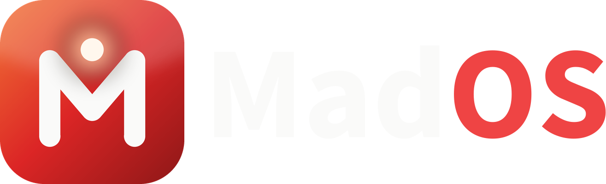
Un système d'exploitation NT libre, sobre et respectueux.
Télécharger MadOS Code sourceVersion expérimentale : à essayer dans une machine virtuelle. · English
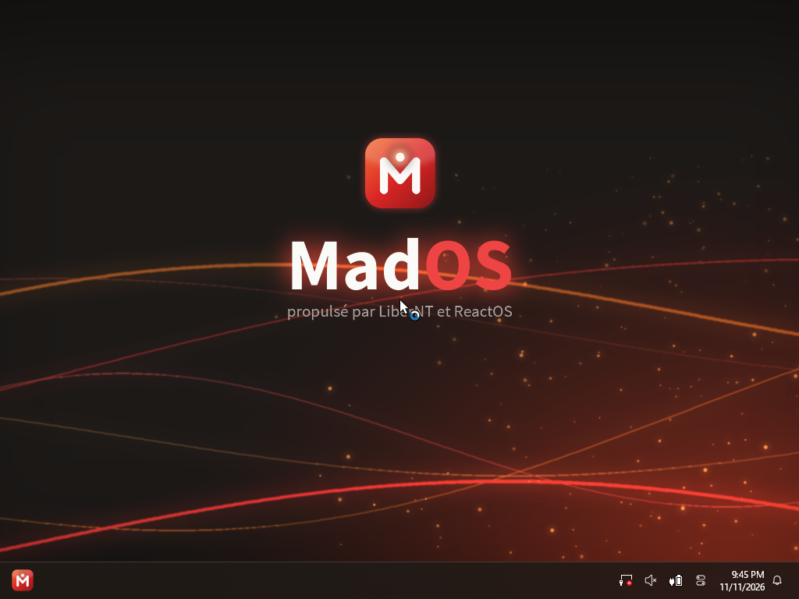
MadOS n'envoie aucune donnée de diagnostic sur votre machine. Il n'y a rien à désactiver.
Cochez Firefox, VLC, LibreOffice, .NET… : MadOS les télécharge chez leur éditeur et vérifie leur signature avant de les installer.
En français dès le premier écran, avec le clavier AZERTY. Une autre langue reste au choix.
Environ 270 Mo de mémoire au repos et 510 Mo sur le disque. Un bureau en 7 secondes après le logo.
Braise, Océan, Forêt, Améthyste ou Ambre : couleurs, fond d'écran, bouton Démarrer et icônes changent d’un clic.
MadOS charge les pilotes Windows officiels des constructeurs : Ethernet, Wi-Fi et Bluetooth fonctionnent sur un vrai portable.
Choisissez votre couleur dans Thèmes, au menu Démarrer : le thème s'applique tout de suite, sans redémarrer.
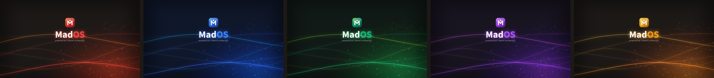
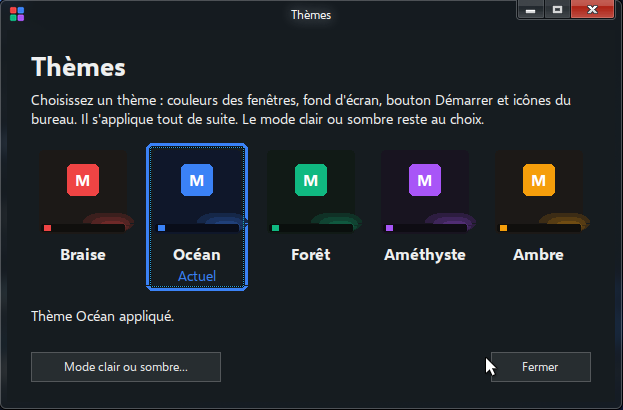
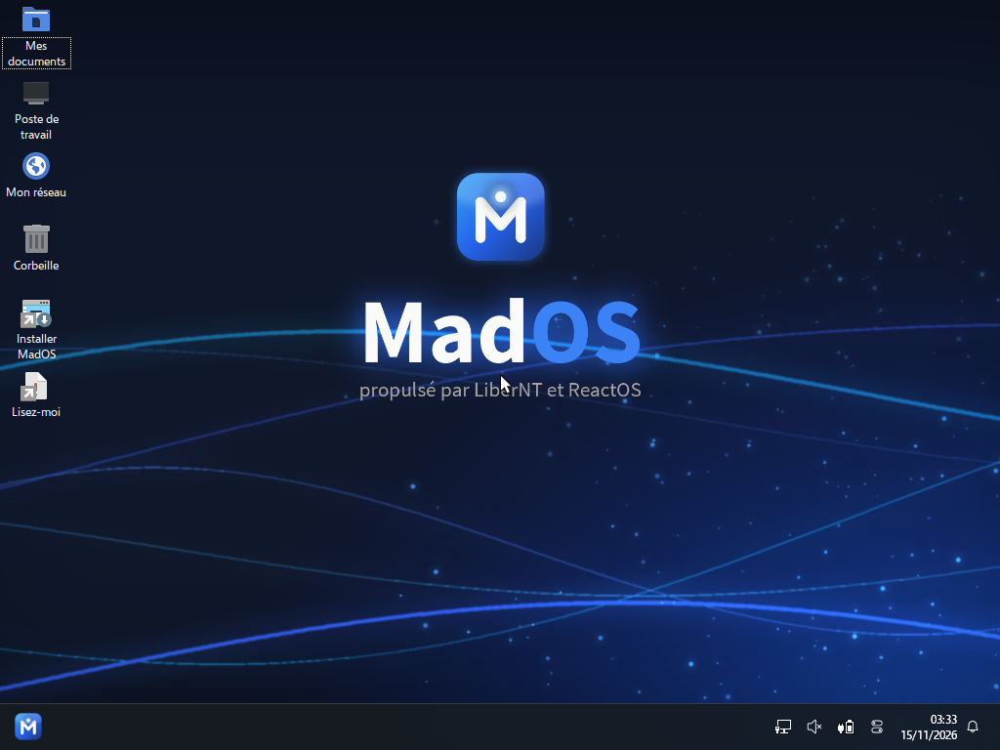
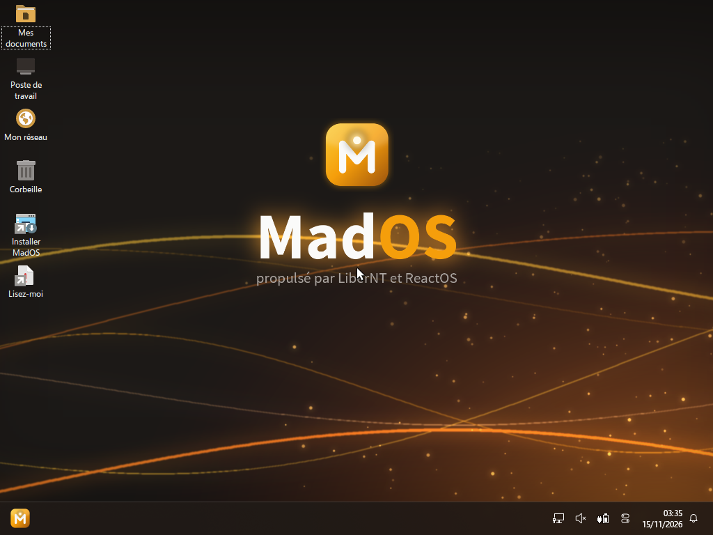
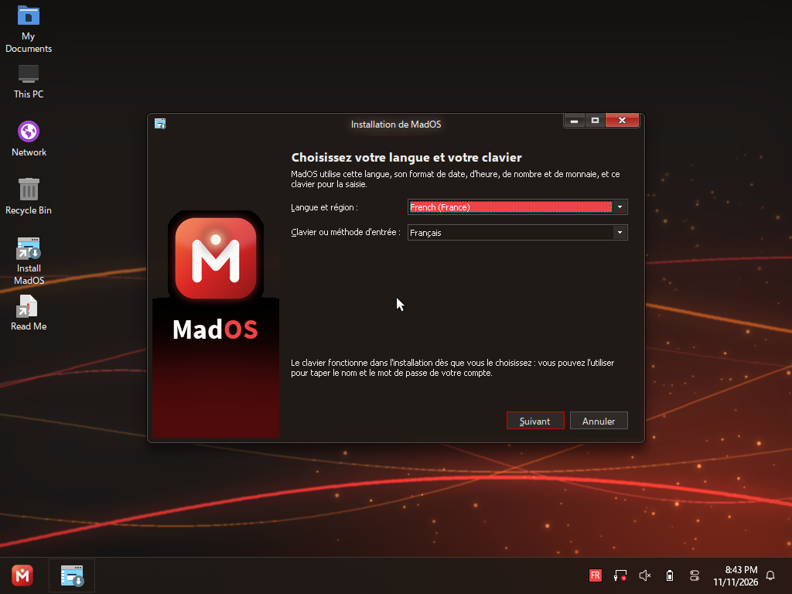
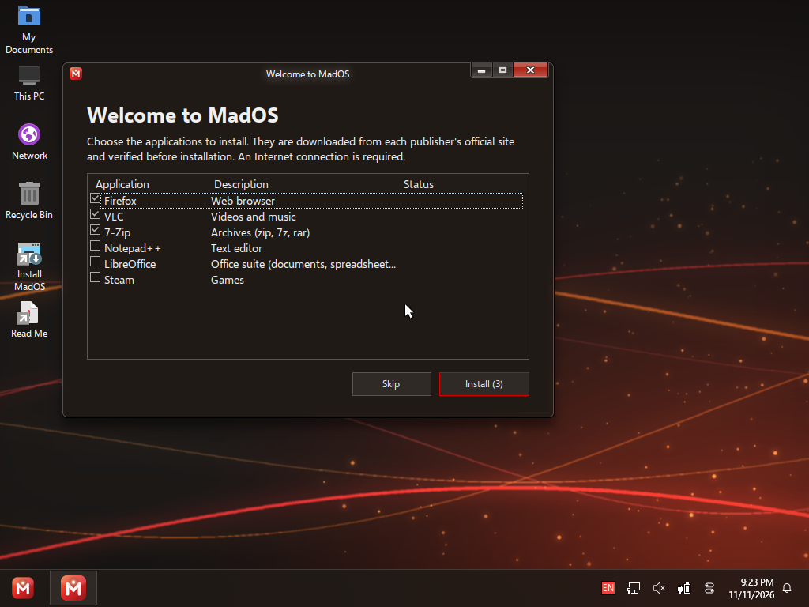
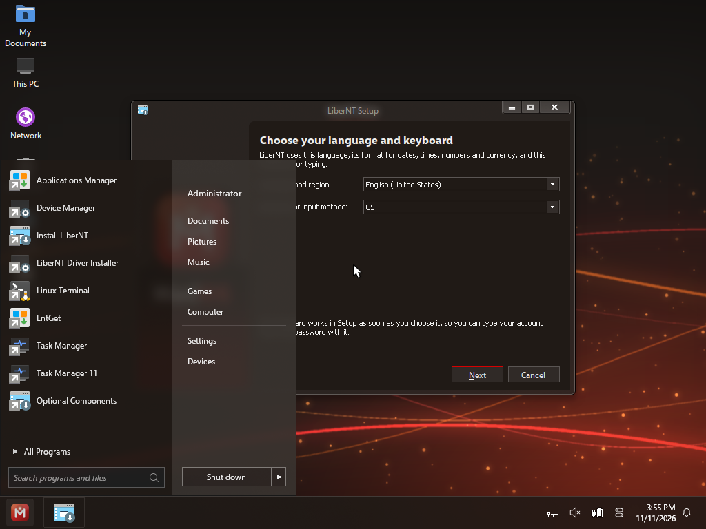
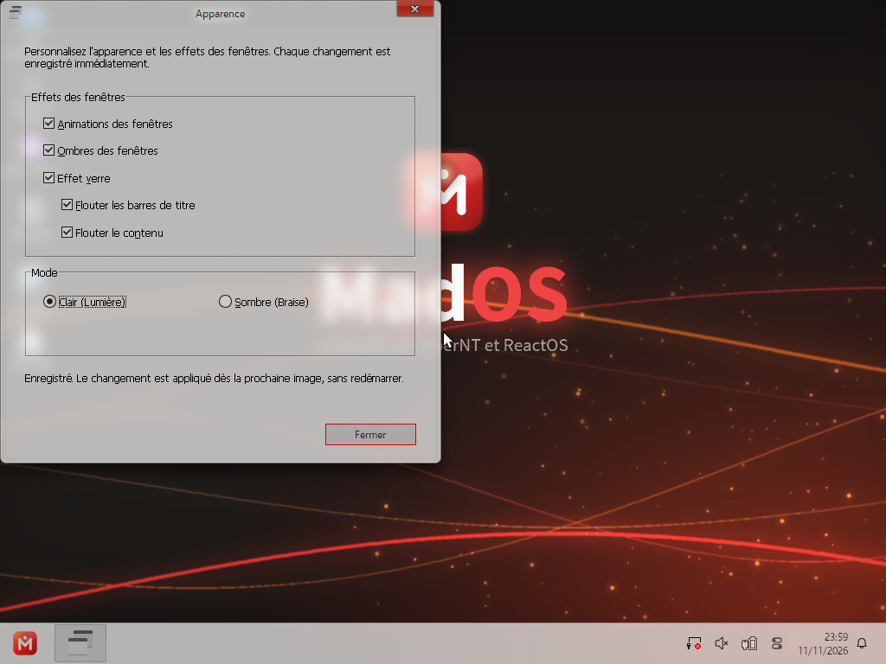
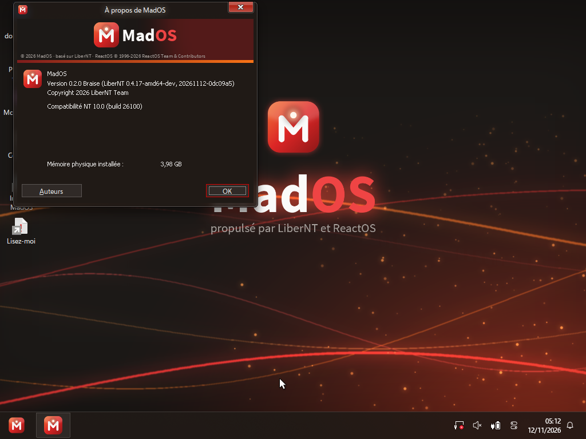